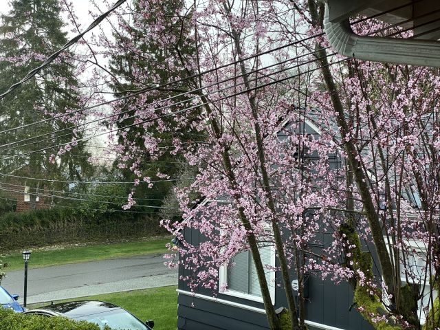

Sent March 10th, 2020
There is a tree with pink blossoms outside our kitchen window. In the mornings, when I am cooking oatmeal and tidying up the kitchen, the rising sun is just visible between the trees in the distance.

Yuling and I have been self-isolating since Monday last week. First my company, Stripe[1], and then Yuling's company, Amazon[2], started encouraging employees to work from home. We are well stocked with essential non-perishables, and have mostly been relying on grocery delivery services for fresher ingredients. We've been avoiding popular places but still take walks in the less-crowded parks.
The city around us feels split in how to respond. I know of friends and coworkers that, like us, are staying close to home and avoiding any activities that involve close contact with others. However, the few times I have ventured out, there appears to be no shortage of those going about their lives as usual.
It is difficult to concentrate on work during the day while my curious daughter vies for attention. (In an unfortunate turn of events, our babysitter also fell ill the week we started working from home. We hope it is just the flu.) She wants to be so much like mom and dad. Her favorite activity now is sitting at either of our desks and banging on a keyboard.
A few years ago, I read the "Remembrance of Earth's Past" trilogy by Cixin Liu. [3] It left me with an enduring sense that while our lives are so very brief, our stories reach further into the past and further into the future than we will ever know. This awareness is sharpened in the face of a looming global challenge that may disrupt our lives in several ways. For now, we are okay; we sit on the beach and watch the tide come in.
In the morning, Amelia helps me unload the dishwasher while the cherry blossoms light up in front of the rising sun. Life is beautiful in every sense of the word.
[1] https://www.geekwire.com/2020/stripe-closes-seattle-office-two-days-precaution-learning-employee-contact-coronavirus-patient/ [2] https://www.geekwire.com/2020/amazon-changes-coronavirus-plan-tells-seattle-area-employees-work-home-march-31/ [3] Highly recommended: https://en.wikipedia.org/wiki/Remembrance_of_Earth%27s_Past